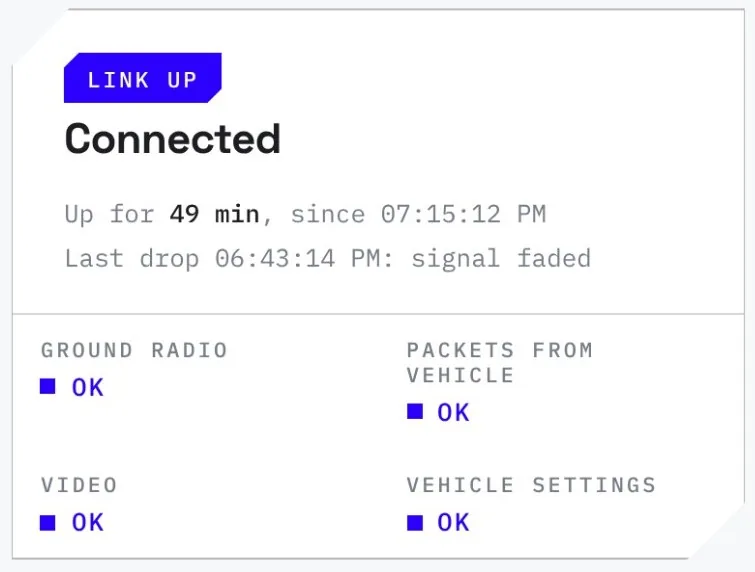
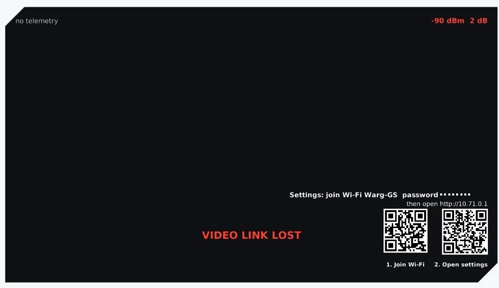
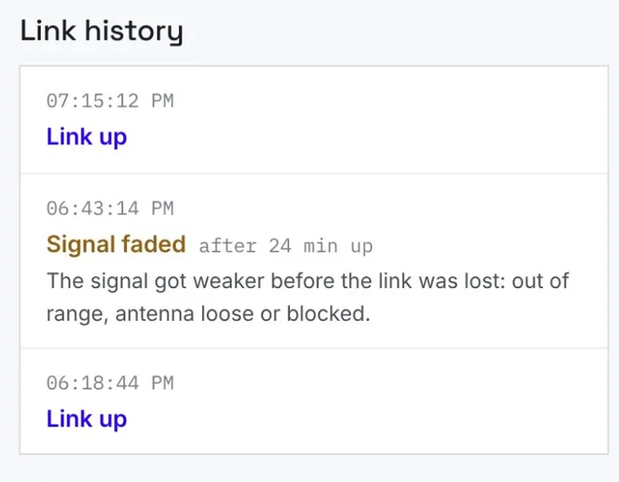
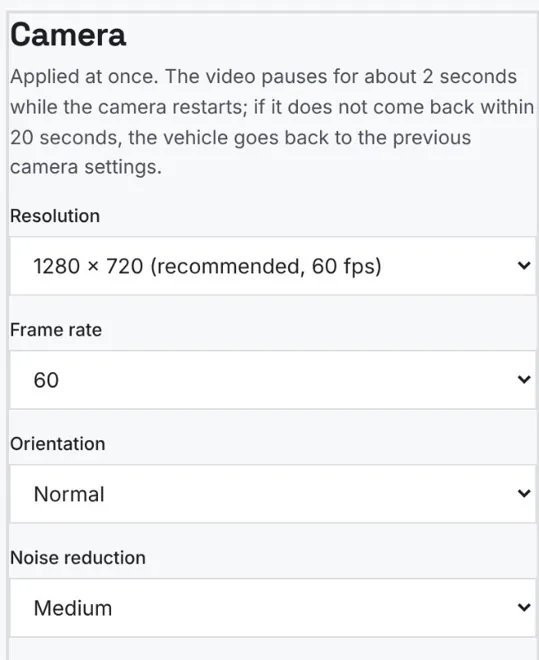
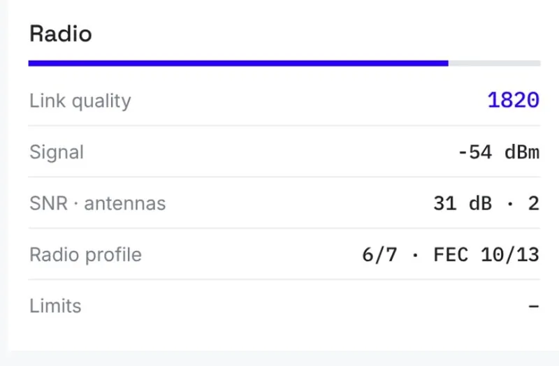
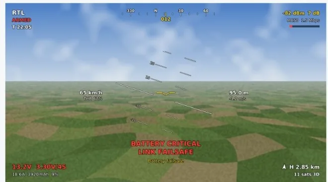
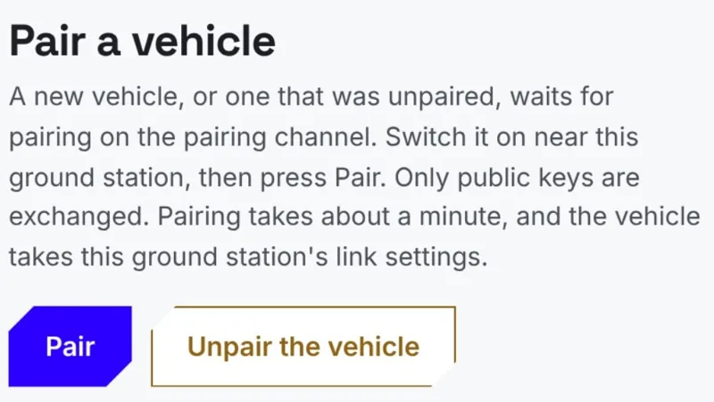
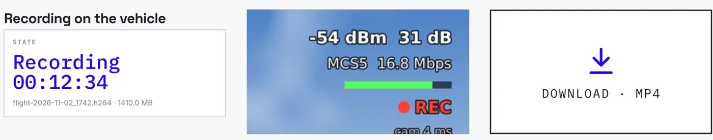
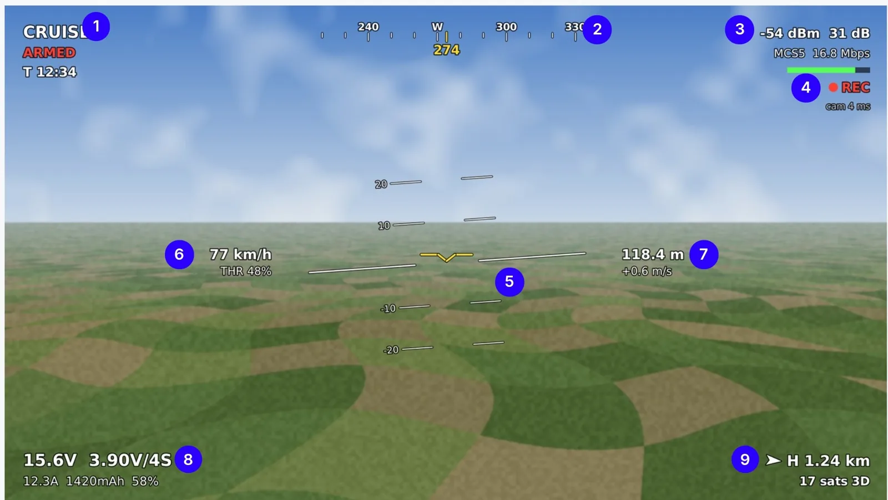
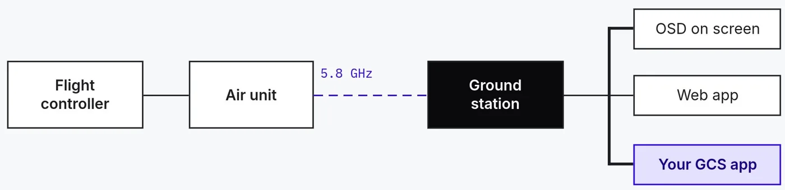

Home
Is everything OK? One look tells you.
Four checks, from the ground radio to the video, plus the frequency, resolution and frame rate actually received. If a check fails, it says why.
Included with every unit
Join the ground unit’s Wi-Fi, open one page, and see, set and record everything on both ends of the link. No app to install, no laptop, no cables.

01 · Watch
Link health, video and flight data, live.
02 · Tune
Camera, radio, OSD and telemetry, from one page.
03 · Keep
Record on the drone, download to your phone.


Home
Four checks, from the ground radio to the video, plus the frequency, resolution and frame rate actually received. If a check fails, it says why.

Home
Link history lists each drop with its likely cause: weak signal, power loss or wrong pairing. Flight mode, altitude, GPS and battery sit alongside.

Vehicle
Colour looks for bright sun or low light in one tap, live sharpness, contrast, exposure and white balance, and focus assist. A failed change reverts by itself.

Radio and pairing
Change channel, bandwidth or power once and both units switch together. If the vehicle doesn’t answer within 35 s, both go back by themselves. Pairing takes about a minute.

Alerts
Yellow is a warning, red is critical, for battery and link. A hot radio lowers its own power to keep the link alive, and tells you.

System
Signed updates for both units, never while armed, rolled back if a unit doesn’t come back healthy. A page password, and one-button restarts.
Recording
Saved as MP4 on the vehicle, in the same quality as your live view. Press Start, fly with REC on your screen, then tap Download after landing. Files copy over Wi-Fi, never over the video link, and an interrupted download picks up where it stopped.

On-screen display
Flight data from your flight controller and link data from the radio, drawn on the live picture. Show all fourteen items, or only the ones you fly with.


Works with ArduPilot, PX4 and INAV; no extra telemetry radio. On the ground unit’s Wi-Fi, QGroundControl or Mission Planner on UDP port 14551 connects by itself. Let the GCS fly the vehicle, or only watch. Only complete MAVLink messages from your own network reach the vehicle.
It comes with Ghost and with Greywind, and with both Pro units. Nothing extra to buy, nothing to install.